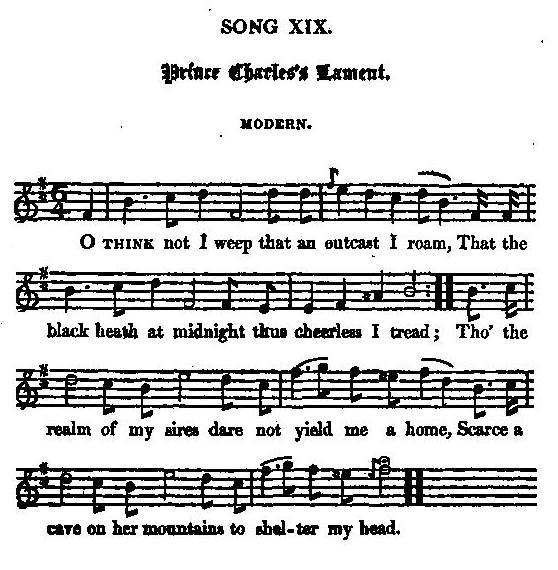

Prince Charles' Lament
La complainte du Prince Charles
Charlie's Wandering, (contributed or written) by M.L.
Tune - Mélodie"Prince Charles's Lament"
from Hogg's "Jacobite Relics" 2nd Series , Appendix, "Jacobite Songs", N°19, 1821
Sequenced by Christian Souchon

|
To the tune:
"Song 19th, as well as the last song (AJ 25:Though rugged and rough...) in this appendix, was sent me anonymously, with the signature here given; and the answer directed to be left at the post-office. They are two beautiful songs, and the author ought not to be ashamed of owning them." (Hogg in "Jacobite Relics"). |
A propos de la mélodie:
"Ce 19ème chant, ainsi que le dernier (AJ 25: "Though rugged and rough") de cette annexe, m'ont été envoyés de façon anonyme, avec les initiales ci-dessous, la réponse éventuelle devant être adressée poste restante. Ce sont deux beaux chants et l'auteur n'a pas à en avoir honte." (Hogg in "Jacobite Relics"). |

|
PRINCE CHARLES's LAMENT
Modern (in 1821) 1. O Think not I weep that an outcast I roam, That the black heath at midnight thus cheerless I tread; Tho' the realm of my sires dare not yield me a home, Scarce a cave on her mountains to shelter my head. 2. Though the day brings no comfort, the night no repose, Yet not for my own doth my spirit repine, But in anguish I weep for the sorrows of those, Whose eyes, and whose bosoms, have melted for mine. 3. The yell of the blood-hounds that hunt them by day, On my short startled slumber forever attends, While the watch-fires that beacon my night covered way, Are the flames that have burst from the roofs of my friends. 4. Though the blade, blood-encrusted, hath sunk in the sheathe, No time and no distance a refuge afford, But chased on the mountains, and tracked o'er the heath, The scaffold must end what was left by the sword. 5. Ye loyal, ye brave, and is this your reward ? With the meed of the traitor, the coward repaid, While in peace ye had lived had your bosoms been bared, On the prayer of your Prince, that implored you for aid. 6. Unpitied, unspared, let it sweep o'er my path, On me be concentered its fury, its force, My rash lips have conjured this tempest of wrath, But why should the sinless be scourged in its course ? 7. If the fury of man but obey thy decree, If so guilty, my God, be the deed I have dared, Let thy curse, let thy vengeance, be poured upon me, But, alas! let my friends, let my country be spared. M.L. Source: "The Jacobite Relics of Scotland, being the Songs, Airs and Legends of the Adherents to the House of Stuart" collected by James Hogg, volume 2 published in Edinburgh by William Blackwood in 1821. |
COMPLAINTE DU PRINCE CHARLES
Moderne (en 1821) 1. Faudrait-il que je verse des pleurs inutiles, D'avoir à parcourir cette lande à minuit? Quand ma propre patrie me refuse l'asile, Pour reposer ma tête, une grotte suffit. 2. Je vis traqué le jour, la nuit dans l'insomnie, Mais ce n'est pas mon sort qui cause mon chagrin. Je pleure les malheurs de cette foule amie Dont les yeux sont mes yeux et le coeur est le mien. 3. L'aboiment de ces chiens qui, le jour, les poursuit, A jamais rythmera mes songes inquiets, Tandis que les fanals qui balisent mes nuits Sont les flammes qui rongent les toits de mes alliés. 4. Le fer ensanglanté a rejoint le fourreau. Mais ni l'éloignement, ni le temps ne protègent, Ceux que l'on chasse et traque et par monts et par vaux L'épée les épargna. L'échafaud les achève. 5. Bravoure et loyauté sont mal récompensées. On stipendie le traître et l'on paye le couard, Vous qui viviez en paix, offriez aux épées Vos poitrines, suivant l'appel de Charles Stuart. 6. Sans pitié, sans égard, qu'ils suivent donc ma trace Et concentrent sur moi leur furie, leurs efforts: Leur rage avait rendu mes lèvres trop loquaces. Mais doit-on châtier ceux qui n'ont point de torts? 7. Si la furie de l'homme est soumise à Ta loi Et que mon entreprise est par Toi condamnée, Que Ta colère, O Dieu, se concentre sur moi, Mais fais que ma chère patrie soit épargnée! (Trad. Christian Souchon (c) 2010) |